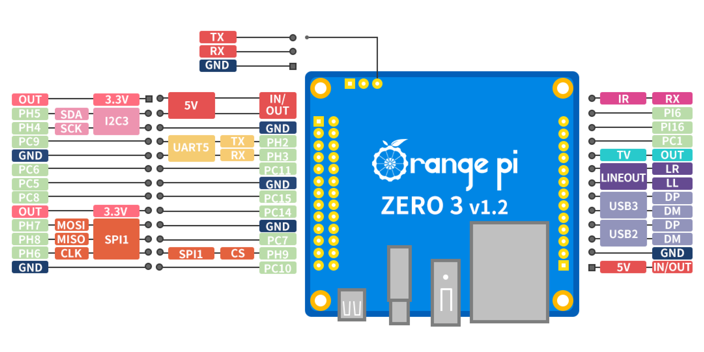
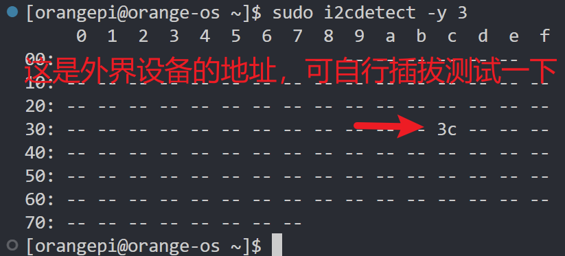
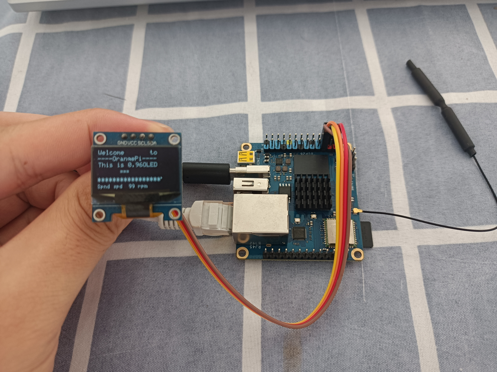

香橙派zero3 I2C oled连接测试
板子：香橙派zero3 2gb
镜像：orange os (arch linux)
先贴张引脚图

可见，可以扩展的是I2C-3
这个镜像系统默认不开启i2c-3，也没有官方的配置工具orangepi-config，所以需要我们手动开启i2c-3。
打开/boot/extlinux/extlinux.conf，在FDT下面一行添加FDTOVERLAYS1
FDTOVERLAYS /dtbs/allwinner/overlay/sun50i-h616-ph-i2c3.dtbo
重启系统，查看/dev/i2c-*1
2$ls /dev/i2c-*
/dev/i2c-3 /dev/i2c-4 /dev/i2c-5
i2c-3已经启用，接着进行测试
安装i2c-tools1
2sudo pacman -S i2c-tools
sudo i2cdetect -y 3

下载wiringOP获取示例代码1
2
3
4
5git clone https://github.com/orangepi-xunlong/wiringOP
mkdir test && cd test
cp ../wiringOP/examples/oled_demo.c .
gcc -lwiringPi oled_demo.c
sudo ./a.out /dev/i2c-3
此时oled出现画面

本博客所有文章除特别声明外，均采用 CC BY-NC-SA 4.0 许可协议。转载请注明来自 Pengunix！
相关推荐